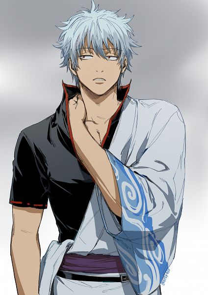

Introduction
Gintoki Sakata (坂田 銀時, Sakata Gintoki) is the main protagonist
of the
Gintama series.
He is the founder and president of the Yorozuya, as well as a highly-skilled samurai, having
fought in the Joui War in the past. During the war, he became known as the Shiroyasha
(literally meaning "White Yaksha", a kind of demon in Buddhism and Hinduism) due to his
powerful swordsmanship, demonic appearance, white clothing, and silver hair.
What Does Our Website Do?
Well, What does a Senpai Do? , He teaches the cool stuff right?. After Experiencing what the world has to offer , a
Senpai guides his juniors where to find the stuff. And, that is what we do here.